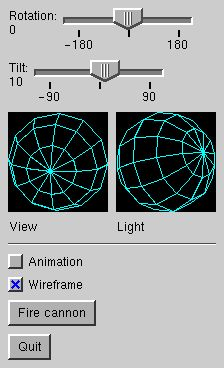

|
Contents |
Lesson 7 |
| Introduction |
One of GLOW's strengths is that it gives you the ability to write your own custom widgets and integrate them directly into the GLOW system. This lesson will describe the process of writing widgets. We will extend the control panel we wrote for lesson 6 to include facilities for controlling the viewpoint and light source location. To do this, we will write a simple "trackball" widget using the view manipulator we learned about in lesson 5. We'll then use two of these trackballs to control the view and lighting parameters. In the process, we'll also look briefly at the vector algebra classes provided by GLOW.
| Writing a widget |
 The first step in writing a widget is deciding how the widget will behave: what it will look like, how it will respond to events, and how it will notify other program components of changes in its state. For the purposes of this lesson, we'll make our trackball widget fairly simple. It should be recognizable as a ball, it should rotate when the mouse is dragged over it, and it should change the viewpoint of the scene as it is rotated. To the right is an image of the widget we'll write. For now, we'll just use the GLUT calls to draw a wireframe ball; however, you can change it later to draw a shaded ball if you wish.
Declaring a widget class
Now let's take a look at ballwidget.h. Our widget class, BallWidget, must subclass GlowWidget, which is defined in glowWidget.h. Alternately, if you're refining an existing widget, you can subclass that widget directly. Widgets are similar to subwindows in that they inherit from GlowComponent, and they recognize most of the same concepts as subwindows such as hierarchy, redraw, event reporting, and screen position and size. However, widgets are not subwindows. They aren't implemented using GLUT subwindows, and as such they do not have their own OpenGL context, nor do they receive window manager events such as reshape and visibility events. The names of the methods you implement are also different for widgets.
When you subclass GlowWidget, you need to provide a constructor/destructor, an OnWidgetPaint() method for drawing, an OnAutoPack() method for automatic sizing and positioning of the widget, and widget event handlers such as OnWidgetMouseDown(). Our BallWidget class includes those methods, plus several others to allow reporting of widget events and other manipulation.
The widget constructor
Now let's jump over to ballwidget.cpp to see some of the basic widget operations. First, let's look at the constructor. The first step is to initialize the widget base class by filling out the parameter block and calling GlowWidget::Init():
GlowWidgetParams params; params.x = x; params.y = y; params.width = params.height = width; GlowWidget::Init(parent->Root(), parent, params);Next, we'll set up the widget. We'll implement the rotating ball by creating a component to draw the ball, and attaching it to a GlowViewManipulator.
_manip = new GlowViewManipulator(this, GlowViewManipulatorParams::defaults); new DrawWireSphere(_manip);You can see the class DrawWireSphere just above the BallWidget constructor. It's a simple component that draws a wireframe sphere. The last line in the BallWidget constructor is an important one for setting up event handling:
RegisterMouseEvents();That line informs the widget system that our widget wants to receive mouse events. There is also a similar call RegisterKeyboardEvents() for registering to receive keyboard events (actually, technically, for becoming eligible to receive the keyboard focus). You should call the appropriate Register... methods in your widget constructor. There are also corresponding Unregister... methods, but you do not normally need to call them explicitly unless your widget, for one reason or another, needs to make itself ineligible to receive events for a time. Widgets are automatically unregistered when they are deleted, made inactive or made invisible, and reregistered when they are reactivated and made visible. Widget event registration is analagous to the event mask setting for subwindows.
Drawing the widget
Now that we've set up our widget, let's look at the drawing mechanism. You set up your widget drawing by overriding the method OnWidgetPaint(). At the time of the call, the viewport is set to the widget's rectangle in the frame buffer, so you don't have to worry about positioning the widget. Most widgets can just be drawn during this method.
In our case, however, we have a slightly more complicated situation. We have attached to our widget a view manipulator and a component that draws the wireframe sphere we use for our trackball. So what do we put in OnWidgetPaint(). Well, to make the widget look good, we're going to want the wireframe ball drawn on a black background. Since the normal widget background is light gray, we'll have OnWidgetPaint() clear the widget's rectangle to black.
void BallWidget::OnWidgetPaint() { ::glColor3ub(0, 0, 0); ::glBegin(GL_QUADS); ::glVertex2f(-1.0f, -1.0f); ::glVertex2f(1.0f, -1.0f); ::glVertex2f(1.0f, 1.0f); ::glVertex2f(-1.0f, 1.0f); ::glEnd(); }It turns out that OnWidgetPaint() gets called during GlowComponent::OnBeginPaint(), and therefore it is called before the children are drawn. That is good for our situation because we want the rectangle cleared to black before the trackball is drawn. However, it also makes for another useful property. Certain widgets, such as the GlowPanelWidget, are intended to contain other widgets. That is implemented by making the contained widgets children of the containing widget. Therefore, the containing (panel) widget is drawn first, giving the background, and the contained widgets are drawn on top.
One other feature of widget drawing that you should be aware of is clipping. Widgets may choose to "clip" drawing to their borders, which causes the OpenGL scissor rectangle to be intersected with the widget's rectangle prior to drawing. (The scissor is restored at the end of the drawing process.) An upshot of this is that children of the widget are "clipped" to the widget's rectangle, which may be useful for widgets that visually contain other widgets, such as panels. Normally, when you write a widget, you should decide whether it should clip; if so, set the clipping field of GlowWidgetParams to true when you initialize the widget in your constructor.
Handling events in widgets
To handle events in a widget, override the methods OnWidgetMouseDown(), OnWidgetMouseUp(), OnWidgetMouseDrag(), and OnWidgetKeyboard(). Those methods are analagous to the similar methods of GlowSubwindow. Our implementations of the mouse event handlers for BallWidget are pretty similar to the view manipulator window we wrote in lesson 5, except that here we'll only allow rotation. Note that GlowWidget also provides a NormalizeCoordinates() method; it normalizes the coordinates within the widget's rectangle.
Source: ballwidget.h
Source: ballwidget.cpp
Reference: class GlowViewManipulator
Reference: class GlowWidget
Reference: class GlowWidgetParams
| Widget events |
Another decision you'll need to make when writing a widget is how to report widget events. For example, if you're writing a pushbutton, you need to notify the client program when the button is pressed. For our trackball widget, we'll use the same mechanism used by GLOW's provided widgets: we'll allow the widget to be bound to event receivers, and we'll provide methods that can be overridden.
Inheritance-based notification
First, we'll implement the inheritance-based notification. In the file ballwidget.h, there are two virtual methods:
virtual void OnDragged(Glow::MouseButton button, Glow::Modifiers modifiers); virtual void OnReleased(Glow::MouseButton button, Glow::Modifiers modifiers);OnDragged() will be called repeatedly while the trackball is being dragged, and OnReleased() will be called once when the trackball is released.
To see how we implement the event notification in ballwidget.cpp, let's take another look at the event handlers. BallWidget::OnWidgetMouseDown() contains two lines at the end to save the button and keyboard modifiers that were used. Then, in OnWidgetMouseDrag(), we call our notification method, passing it the mouse button and modifiers we saved:
OnDragged(_button, _modifiers);Similarly, in OnWidgetMouseUp(), we call:
OnReleased(_button, _modifiers);There, that wasn't so hard. Now a subclass of BallWidget can override the methods to receive events.
Sender-receiver notification
Now, let's take a look at our default implementations of OnDragged() and OnReleased().
void BallWidget::OnDragged(Glow::MouseButton button, Glow::Modifiers modifiers) { GLOW_DEBUGSCOPE("BallWidget::OnDragged"); BallMessage message; message.widget = this; message.rotation = _manip->GetRotation(); message.released = false; message.mouseButton = button; message.modifiers = modifiers; _sender.Send(message); }Here in OnDragged(), we create a message structure of type BallMessage, and fill it out with information on the trackball-dragged event. Note that we get the current rotation value, in the form of a quaternion, by calling GlowViewManipulator::GetRotation(). Quaternions, which are implemented as type Quatf in GLOW, are a useful method of representing 3D rotations. We'll see later how we can extract useful information out of the quaternion. For now, all we do is construct the event message, and hand it to a Sender, which broadcasts it to an connected event receivers. The OnReleased() method is written similarly, except it sets the released field of the message to true.
We also need a way for a client program to bind the widget to receivers. To that end, we provide a method BallWidget::Notifier(), returning a reference to the sender object, which can be bound to receivers.
inline TSender<const BallMessage&>& BallWidget::Notifier() { return _sender; }Now we can bind this widget to a receiver. For example:
myBallWidget->Notifier().Bind(myReceiver);Standards for reporting events
If you're writing a widget that will be used by other developers, I recommend following a few guidelines for API consistency with GLOW's provided widgets.
- Provide both the above ways of reporting widget events: virtual method override and sender-receiver. If only one type of event is to be report (as in a pushbutton press), name your virtual method "OnHit()"; otherwise, name the two methods according to the type of event as we have done for BallWidget.
- Send only one type of message unless the different event types would almost always be handled differently. For example, in our case, we had two types of events (drag and release), but sent only one message with a field distinguishing the two because most applications would treat them the same. Name the widget method that returns a reference to the message sender "Notifier()" if there is only one type of event; otherwise name them according to the type of event (e.g. "ReleaseNotifier()).
- For the message type itself, provide a member named "WidgetType* widget" containing a pointer to the widget that raised the event. If the event is mouse-related, provide members "Glow::MouseButton mouseButton" and "Glow::Modifiers modifiers" giving information on the mouse button pressed and the modifiers that were down at the time. If the event is keyboard-related, provide members "Glow::KeyCode keycode" and "Glow::Modifiers modifiers" giving information on the key pressed and the modifiers that were down at the time.
Source: ballwidget.h
Source: ballwidget.cpp
Reference: class Glow
Reference: class GlowWidget
Reference: class Quatf
| Autopacking |
One of the features of GLOW's widget system is its ability to automatically arrange widgets in a window, using an interface such as QuickPalette. Even widgets that you write may participate in automatic arrangement. This means, however, that each widget needs to specify how it wants to be arranged. You do this by overriding the method OnAutoPack(), which has the signature:
virtual GlowWidget::AutoPackError OnAutoPack(int hSize, int vSize, GlowWidget::AutoPackOptions hOption, GlowWidget::AutoPackOptions vOption, int& leftMargin, int& rightMargin, int& topMargin, int& bottomMargin)About the OnAutoPack method
The OnAutoPack() method is called during autopacking to ask a widget to resize itself according to its own preferences and the constraints given as parameters. The vertical and horizontal constraints are specified separately in the parameters hSize and hOption, and vSize and vOption, respectively. The widget should attempt to resize itself if it can. If the given constraints are unacceptable to the widget, it should return an error code, either hAutoPackError or vAutoPackError. We'll look at the margin parameters later.
There are four values that can be specified as the packing option: GlowWidget::noReshape, GlowWidget::preferredSize, GlowWidget::expandPreferredSize and GlowWidget::forcedSize.
If noReshape is given, the widget should not change its size in that direction. The widget may ignore the value given in the size parameter.
If preferredSize is given, the widget should choose its favorite size and reshape itself, subject to the constraint that the size should not exceed the value given in the size parameter. For example, consider a widget that prefers to be 100 pixels wide, but can tolerate a width of as little as 80. If a large value such as 120 is given in the size constraint, the widget should resize itself to its ideal size of 100 pixels. If the constraint is 90, which is smaller than ideal but still tolerable, the widget should go ahead and resize itself to 90. If, however, the constraint is 70, which is too small, the widget should return an error from OnAutoPack(). If the special value GlowWidget::unspecifiedSize is passed in the size parameter, the widget should treat the size as unconstrained, and simply choose its ideal size.
The expandPreferredSize option is similar to preferredSize, but with the additional request that the widget expand its size to fill the given constraint. The expansion is only a request; a widget may choose to honor it or not. For example, a pushbutton would probably honor the request, because it is okay visually for it to expand its size; however, an icon or other fixed-size object may choose to deny the request. If the expandPreferredSize option is given, the size will constraint will never take the value GlowWidget::unspecifiedSize.
The forcedSize option demands that a widget resize itself to the given size parameter. A widget should resize itself to satisfy the constraint, or return an error if it can't.
Autopacking the trackball
As an example, let's look at our trackball widget. We'll say the widget has a preferred size of 100 pixels, and a minimum tolerable size of 20 pixels. And just to make things interesting, let's thrown in an additional constraint that the widget must be square.
First, let's make our life easier by reducing the number of cases we have to look at. The noReshape option is similar to forcedSize with the size set to the current size. Therefore, let's:
if (hOption == noReshape) { hOption = forcedSize; hSize = Width(); } if (vOption == noReshape) { vOption = forcedSize; vSize = Height(); }Now, let's handle the forcedSize case. First, we need to make sure the squareness constraint is upheld, so if the two dimensions are being forced to different sizes, we fail:
if (hOption == forcedSize && vOption == forcedSize && hSize != vSize) { return hAutoPackError; }Now, let's handle the forced size cases. We'll store the newly calculated sizes in the variables hnew and vnew. In both cases, we'll also test the forced size to make sure it isn't too small.
if (hOption == forcedSize) { if (hSize < 20) { return hAutoPackError; } hnew = hSize; } if (vOption == forcedSize) { if (vSize < 20) { return vAutoPackError; } vnew = vSize; }Now we'll handle the preferredSize and expandPreferredSize cases: first horizontal and then vertical. We'll look at the horizontal case; the vertical looks pretty much the same. The first thing we do is fail if the size constraint given is too small.
if (hSize != unspecifiedSize && hSize < 20) { return hAutoPackError; }Next, we check to see if the other dimension (vertical) was forced to a particular size. If so, we try to force to the same size to maintain squareness. If, however, the forced vertical size doesn't comply with the horizontal constraint, we need to fail. Hence:
if (vOption == forcedSize) { if (hSize != unspecifiedSize && hSize < vnew) { return hAutoPackError; } hnew = vnew; }Otherwise, we'll just go ahead and find our preferred size. If we're given expandPreferredSize, we'll honor the expansion request and use the given size parameter as our size; otherwise, we'll go as large as we can up to 100 pixels.
else { if (hOption == expandPreferredSize || (hSize != unspecifiedSize && hSize <= 100)) { hnew = hSize; } else { hnew = 100; } }We then do the same thing for the vertical. At the end, we need to handle one more case to ensure squareness. If both horizontal and vertical were constrained by preferredSize or expandPreferredSize, then they may have been set to different sizes. In that case, we set both of them to the smaller value:
if (hnew != vnew) { hnew = vnew = min(hnew, vnew); }Finally, we'll resize the widget and report success:
Reshape(hnew, vnew); return noAutoPackError;Margins
The widget should also set the margin parameters to the margins that the widget left around itself when resizing. Normally, these should simply be set to zero. However, certain widgets may want to leave space around itself when packing. For example, a labeled popup menu widget will need to leave space for the label (which is not included in the widget's rectangle). If such a widget is asked to fill 200 pixels horizontally, but needs 50 pixels on the left for its label, it should resize itself to 150 pixels, and pass 50 back as the leftMargin. That lets GLOW know that, even though the widget has set its rectangle to 150 pixels in width, it still expects to own 50 additional pixels of space on its left. If you don't explicitly set the margin parameters, GLOW will assume you intend for them to be set to 0.
Autopacking can be rather complicated if your widget wants to maintain strange invariants like squareness. In the simple cases, however, writing an OnAutoPack() method is pretty straightforward. For more examples, I suggest looking at the autopacking for GlowPushButtonWidget and GlowPanelWidget. The default method provided in the base class GlowWidget attempts to force the widget to remain the same size, so if the current size doesn't agree with the given constraints, it will return an error. You can stay with the default method if your widget wants to remain a single fixed size.
Source: ballwidget.h
Source: ballwidget.cpp
Reference: class GlowWidget
| Putting it together |
Adding our new widget to the widget palette
Now that we've written our trackball widget, let's integrate it into our glowmech program. First, we'll modify the MechControls constructor in mechcontrols.cpp to add two BallWidget widgets:
GlowQuickPanelWidget* panel2 = panel->AddArrangingPanel(GlowQuickPanelWidget::horizontal); GlowQuickPanelWidget* panel3 = panel2->AddArrangingPanel(GlowQuickPanelWidget::vertical); _viewBall = new BallWidget(panel3); _viewBall->Notifier().Bind(this); panel3->AddLabel("View"); panel3 = panel2->AddArrangingPanel(GlowQuickPanelWidget::vertical); _lightBall = new BallWidget(panel3); _lightBall->Notifier().Bind(this); panel3->AddLabel("Light");Several things to notice in the above code. First of all, we use several layers of arranging panels to get the arrangement we want: the trackballs horizontal, each with a label beneath it. Also, notice that the widgets integrate directly into the QuickPalette's arrangement! There are no special methods in the QuickPalette API for adding our new widget objects, but all we need to do is create the widget with a GlowQuickPanelWidget as the parent, and the widget will be automatically arranged just like any other widget. You can do this with any widget you create: just write a suitable OnAutoPack() method for the widget, and the QuickPalette will know how to arrange it automatically.
Responding to messages from the trackball
Also, we've bound the two widgets to our MechControls object. If you notice in mechcontrols.h, the MechControls class now inherits from BallReceiver and can receive messages from our BallWidget. Let's take a quick glance at the receiver method in mechcontrols.cpp:
void MechControls::OnMessage(const BallMessage& message)The contents of the message handler aren't terribly important. We simply take the quaternion, find an equivalent representation in latitude and longitude (the coordinates used by glutmech), set the appropriate glutmech parameters, and redraw the window. Several of GLOW's provided linear algebra classes are used: 3-vectors and quaternions. For example:
Vec3f vec = message.rotation * Vec3f(0, 0, 1);Takes the quaternion message.rotation, applies it to the vector (0,0,1), and stores the result in the vector vec. Later, we extract the x, y and z components of the result vector separately. The vector algebra classes provide a full complement of operators, including the ability, as shown here, to apply a transform to a vector simply by multiplying.
Source: mechcontrols.h
Source: mechcontrols.cpp
Reference: class GlowQuickPanelWidget
Reference: class Quatf
Reference: class Vec3f
| Where to go from here |
You now know the basics of writing a widget! If you'd like to get more experience, try improving on the BallWidget class. For example, you could make it look a little nicer than the wireframe ball by rendering a shiny, shaded ball instead. You could also make a more flexible constructor using a parameter block API similar to the one used by the provided GLOW widgets.
You can also glean ideas from the implementations of the other GLOW widgets. One of particular interest is GlowMenuButtonWidget, which actually embeds a subwindow in the widget. This is done because we want the widget to respond to mouse clicks by popping up a menu, a capability that is only provided with subwindows. If you want to use this technique, make sure the subwindow inherits from GlowSubwindowInWidget rather than GlowSubwindow. GlowSubwindowInWidget is a special subclass of GlowSubwindow that ensures keyboard events still get reported properly to the widget root.
You'll also notice that several of GLOW's widgets can have labels attached to them. For example, GlowPopupMenuWidget may have an attached label. GLOW implements these widgets by actually attaching a GlowLabelWidget as a child widget of the popup menu widget. If you want to implement a similar labeled widget, you can use GLOW's implementations as a guide. Note that labeled widgets inherit from GlowWidgetLabelHelper in addition to GlowWidget.
If you want to explore the vector algebra classes a little more, here's a simple exercise. Notice that the latitude/longitude rotation specification used by glutmech only provides two of the three rotational degrees of freedom. You can tell because it is not possible to rotate the camera. Since the arcball allows you to manipulate all the degrees of freedom, try modifying glowmech to do the right thing with the viewpoint trackball. Hint: the Quatf class allows you to extract the actual rotation axis and angle that the quaternion corresponds to. And you WILL need to modify glowmech.cpp.
|
Contents |
Lesson 7 |
The GLOW Toolkit